Eight places in the current design, each shown now and with a background added. Keep the ones you like. The pages people work in all day are left calm on purpose. Select a screen to open it live.
A warm welcome behind the sign-in card, carrying the home page feel into the app.
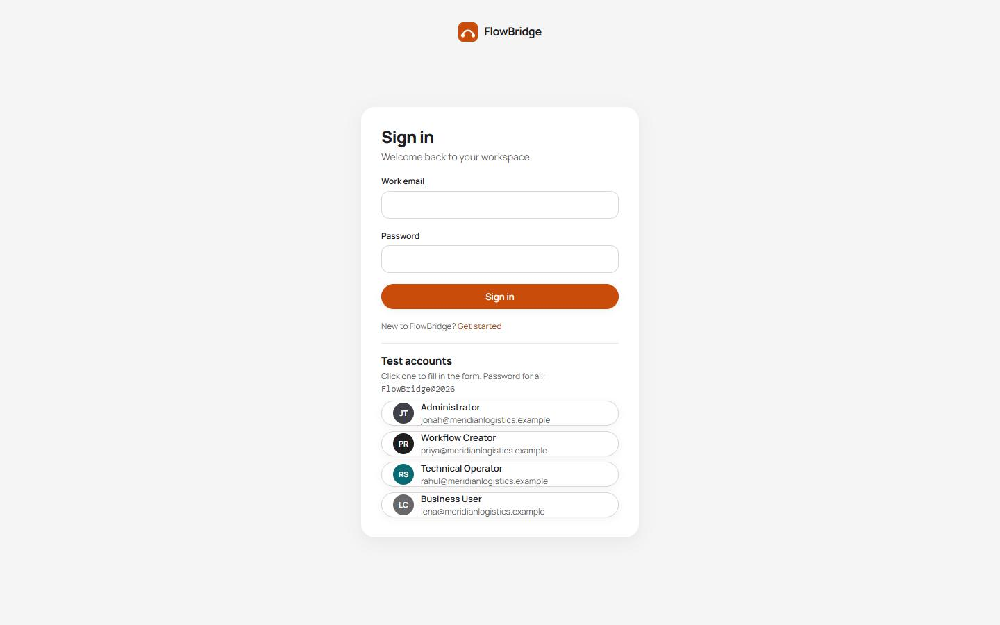
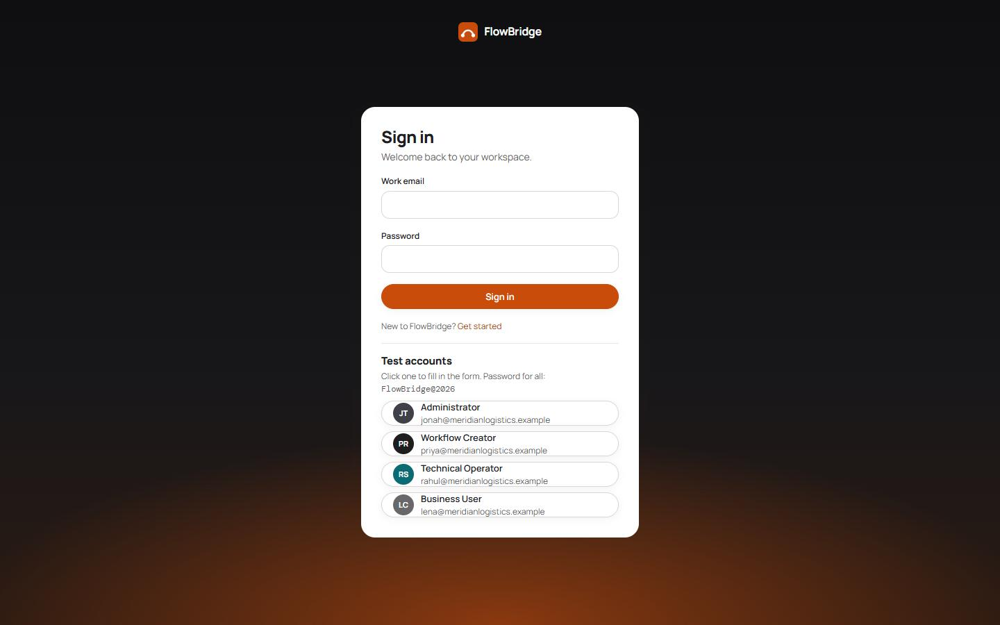
The side panel gets the same horizon glow, so sign-up and sign-in match.
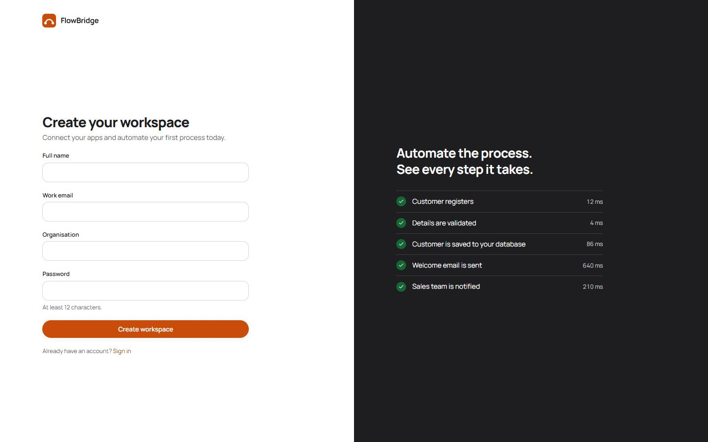
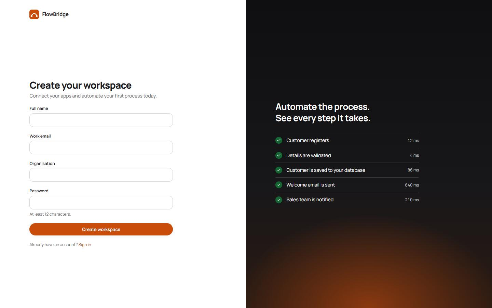
A faint grid gives the failure section a technical, investigative feel.
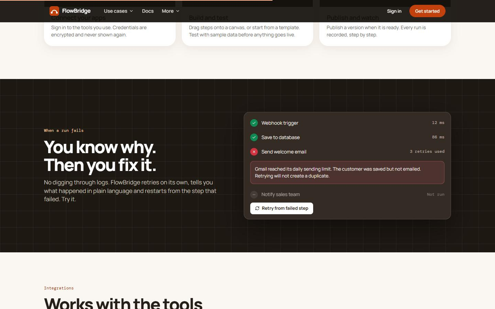
The page ends on a sunset glow behind the last call to action.
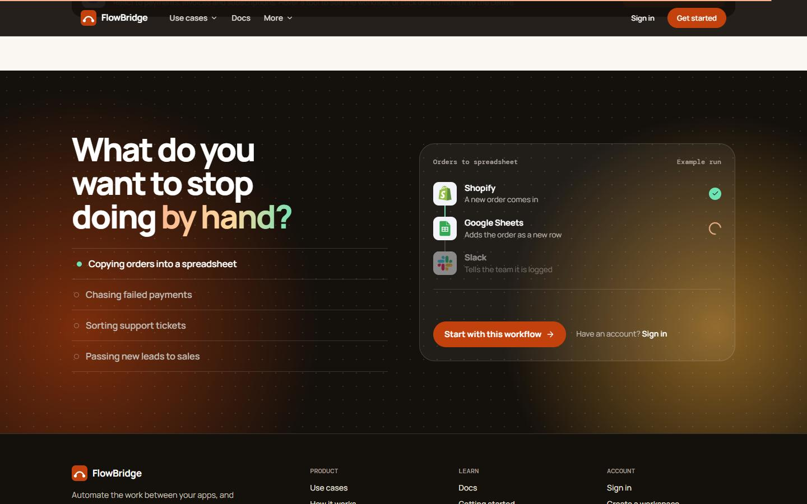
A light grid that fades out under the header, so Docs feels part of the product.
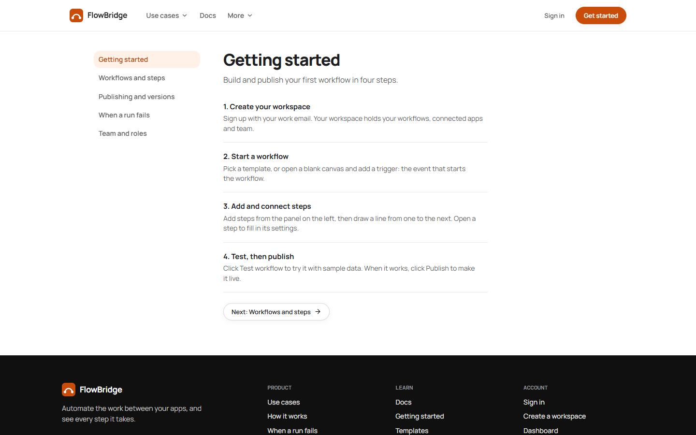
A page people rarely see, so a little character helps it feel designed rather than broken.
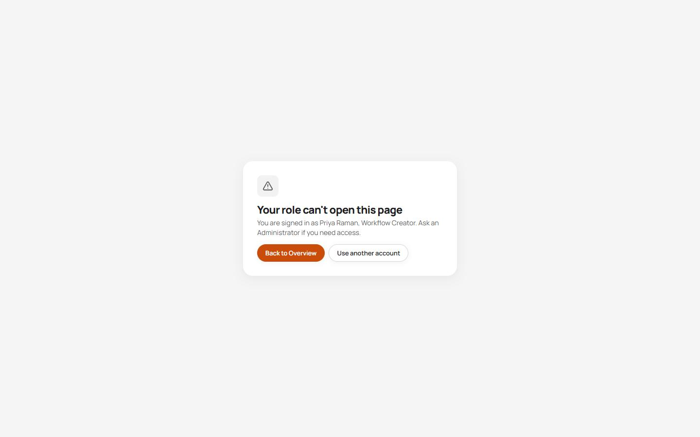
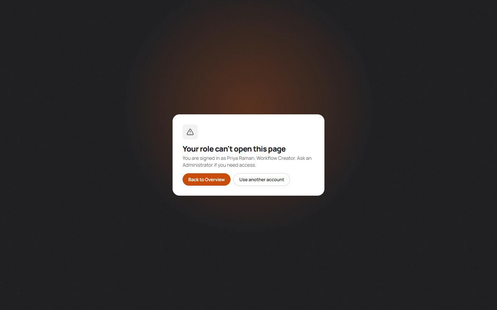
Faint workflow lines fill the empty space exactly when there is nothing else to show.
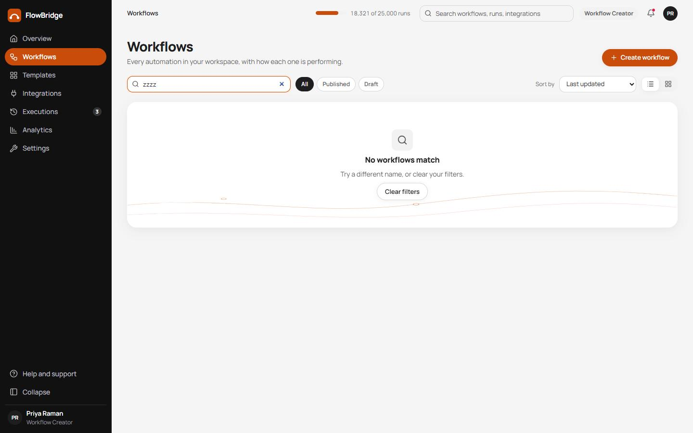
The dark replay area already looks like a canvas; a grid makes it read like one.
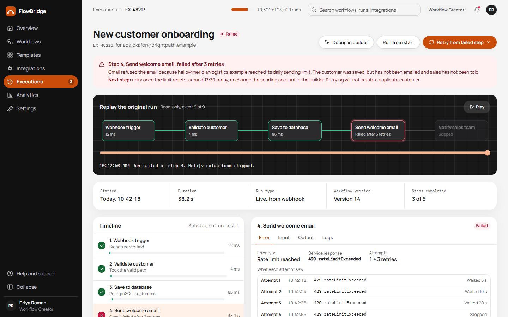